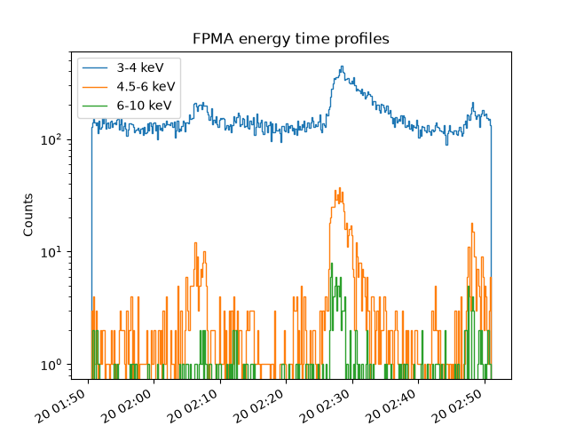
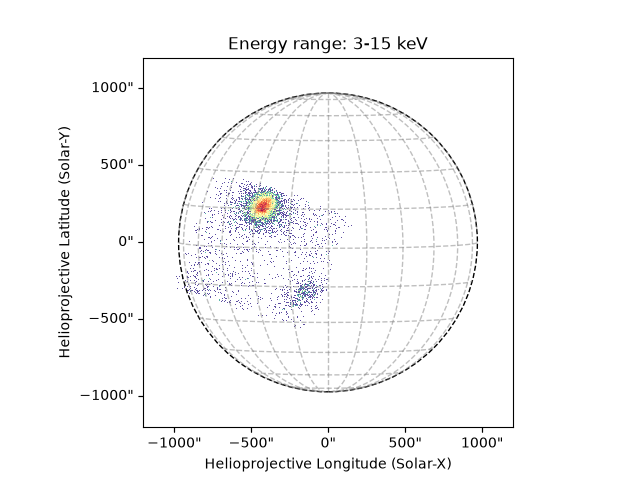
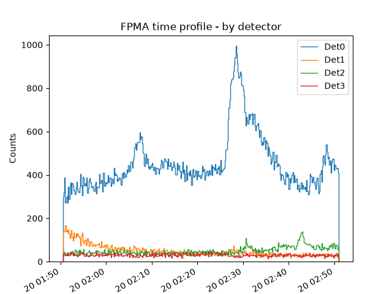
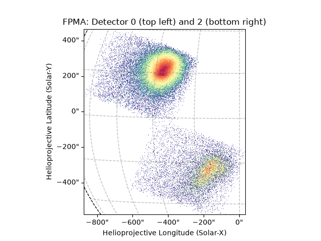
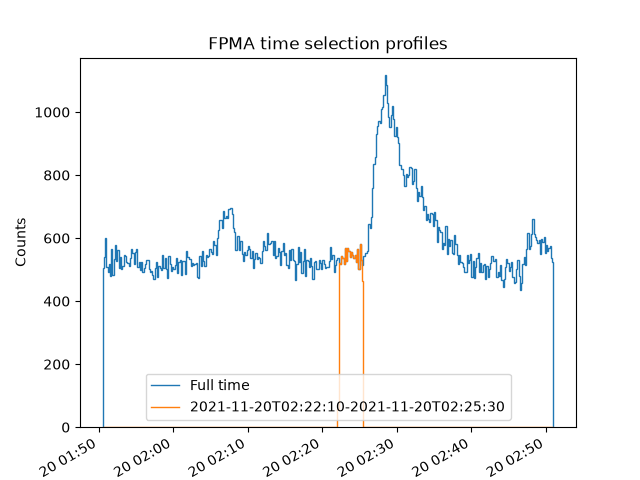
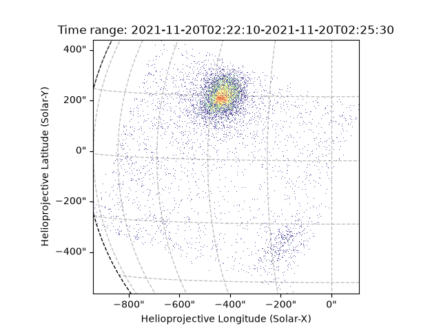
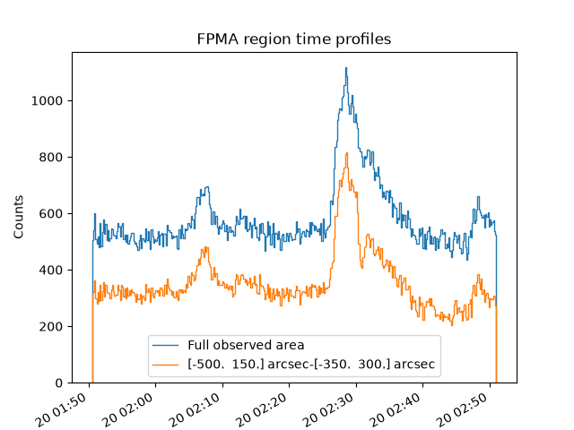
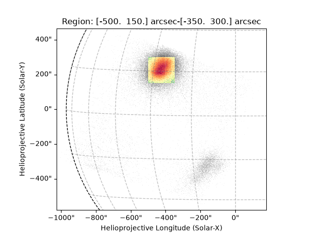

Note
Go to the end to download the full example code.
Using Event Filters
This example shows tusing the event list filters found in jdhsrpy.list_filters.
import ntpath
import os
import urllib.request
import astropy.units as u
import matplotlib.pyplot as plt
from astropy.visualization import time_support
from jdhsrpy import TEST_DATA_LOCATION
from jdhsrpy.list_filters import by_detector, by_energy, by_region, by_time
from jdhsrpy.nustar_evt import NustarEvt, draw_grid
from jdhsrpy.visualize import time_profile_plot
Download an example “sunpos” NuSTAR EVT file.
url = f"{TEST_DATA_LOCATION}/test_nustar_data/nu20619003001A06_cl_sunpos.evt"
filename = os.path.join(os.getcwd(), ntpath.split(url)[1])
if not os.path.isfile(filename):
urllib.request.urlretrieve(url, filename)
Use the class to load in and work with the file.
nustar_object = NustarEvt(evt_filename=filename)
All of the image and time profile methods and functions that depend on the event list accept an event list as an input. If one isn’t given then the default cleaned one is used.
If a user wants to filter the data then all they must do is filter the event list and pass it.
There are two event lists a user might be interested in. For the vast
majority of cases nustar_object.cleaned_evt_data is going to work.
This even list has already bee filtered to remove bad pixel data,
only includes grade 0 counts, and to only include counts with energies
between 2.5 keV and 80 keV.
The original event list directly from the EVT file is stored in
nustar_object.evt_data.
The jdhsrpy.list_filters module has a number of event list filters
and a few will be shown here.
Combining filters
All filter functions from jdhsrpy.list_filters return an event
list. This means that these filters can easily be chained together.
For example, if a user wished to filter an event list by time and region then it is possible.
time0 = "2021-11-20T02:22:10"
time1 = "2021-11-20T02:25:30"
bottom_left = [-500, 150] << u.arcsec
top_right = [-350, 300] << u.arcsec
new_event_data = by_time(
by_region(
nustar_object.cleaned_evt_data,
bottom_left,
top_right
),
time0,
time1
)
The filter order should not matter.
Examples below shows how to use the newly filtered event list being returned from the event list filters.
Filter by energy
Let’s create a time profile from the counts over a few energy ranges.
# choose 3 energy ranges in keV
energy_ranges = [[3, 4], [4.5, 6], [6, 10]]
time_support(format="unix_tai")
plt.figure()
for er in energy_ranges:
timese, cte = nustar_object.count_time_profile_array(
event_data=by_energy(
nustar_object.cleaned_evt_data, energy_low=er[0], energy_high=er[1]
)
)
axes = time_profile_plot(timese, cte, label=f"{er[0]}-{er[1]} keV")
plt.title(f"FPM{nustar_object.fpm} energy time profiles")
plt.xticks(rotation=30, ha="right")
plt.ylabel("Counts")
plt.xlabel("Time")
plt.yscale("log")
plt.legend()
plt.show()

Let’s show off the full_disk_map map method while filtering for
counts 3<=E<15 keV.
# obtain a Sunpy map object of the NuSTAR observation
image_range = [3, 15]
m = nustar_object.full_disk_map(
event_data=by_energy(
nustar_object.cleaned_evt_data,
energy_low=image_range[0],
energy_high=image_range[1],
)
)
# now use it in plotting, this is now just Sunpy API stuff
fig = plt.figure()
ax = fig.add_subplot(projection=m)
m.plot(axes=ax)
draw_grid(m, ax)
plt.title(f"Energy range: {image_range[0]}-{image_range[1]} keV")
plt.show()

Filter by detector
Let’s create a time profile from the counts from each NuSTAR detector.
time_support(format="unix_tai")
plt.figure()
for det in range(4):
timesd, ctd = nustar_object.count_time_profile_array(
event_data=by_detector(nustar_object.cleaned_evt_data, det)
)
axes = time_profile_plot(timesd, ctd, label=f"Det{det}")
plt.title(f"FPM{nustar_object.fpm} time profile - by detector")
plt.xticks(rotation=30, ha="right")
plt.ylabel("Counts")
plt.xlabel("Time")
plt.legend()
plt.show()

As previously stated, the image methods can also accept a new event
list so let’s try the field_of_view_map method and only look at
detector 0.
# obtain a Sunpy map object of the NuSTAR observation
md0 = nustar_object.field_of_view_map(
event_data=by_detector(nustar_object.cleaned_evt_data, 0)
)
md2 = nustar_object.field_of_view_map(
event_data=by_detector(nustar_object.cleaned_evt_data, 2)
)
# now use it in plotting, this is now just Sunpy API stuff
fig = plt.figure()
ax = fig.add_subplot(projection=md0)
md0.plot(axes=ax)
md2.plot(axes=ax)
draw_grid(md0, ax)
plt.title(f"FPM{nustar_object.fpm}: Detector 0 (top left) and 2 (bottom right)")
plt.show()

INFO: Using image-based autoalignment [sunpy.map.mapbase]
Filter by time
Let’s create a time profile from the counts over a time range.
time0 = "2021-11-20T02:22:10"
time1 = "2021-11-20T02:25:30"
time_support(format="unix_tai")
plt.figure()
times, ct = nustar_object.count_time_profile_array(
event_data=nustar_object.cleaned_evt_data
)
timest, ctt = nustar_object.count_time_profile_array(
event_data=by_time(nustar_object.cleaned_evt_data, time0, time1),
time_bins=times, # we can make sure the same time bins are used between profiles
)
axes = time_profile_plot(times, ct, label="Full time")
axes = time_profile_plot(timest, ctt, label=f"{time0}-{time1}", axes=axes)
plt.title(f"FPM{nustar_object.fpm} time selection profiles")
plt.xticks(rotation=30, ha="right")
plt.ylabel("Counts")
plt.xlabel("Time")
plt.legend()
plt.show()

Let’s show the time filtered image.
# obtain a Sunpy map object of the NuSTAR observation
mt = nustar_object.field_of_view_map(
event_data=by_time(nustar_object.cleaned_evt_data, time0, time1)
)
# now use it in plotting, this is now just Sunpy API stuff
fig = plt.figure()
ax = fig.add_subplot(projection=mt)
mt.plot(axes=ax)
draw_grid(mt, ax)
plt.title(f"Time range: {time0}-{time1}")
plt.show()

Filter by region
Let’s create a time profile from the counts in a region.
bottom_left = [-500, 150] << u.arcsec
top_right = [-350, 300] << u.arcsec
time_support(format="unix_tai")
plt.figure()
timesr, ctr = nustar_object.count_time_profile_array(
event_data=by_region(nustar_object.cleaned_evt_data, bottom_left, top_right)
)
axes = time_profile_plot(times, ct, label="Full observed area")
axes = time_profile_plot(timesr, ctr, label=f"{bottom_left}-{top_right}", axes=axes)
plt.title(f"FPM{nustar_object.fpm} region time profiles")
plt.xticks(rotation=30, ha="right")
plt.ylabel("Counts")
plt.xlabel("Time")
plt.legend()
plt.show()

Let’s show the region filtered image with the original map in grey behind.
# obtain a Sunpy map object of the NuSTAR observation
m = nustar_object.field_of_view_map()
mr = nustar_object.field_of_view_map(
event_data=by_region(nustar_object.cleaned_evt_data, bottom_left, top_right)
)
# now use it in plotting, this is now just Sunpy API stuff
fig = plt.figure()
ax = fig.add_subplot(projection=m)
m.plot(axes=ax, cmap="Greys")
mr.plot(axes=ax)
draw_grid(m, ax)
plt.title(f"Region: {bottom_left}-{top_right}")
plt.show()

INFO: Using image-based autoalignment [sunpy.map.mapbase]
Total running time of the script: (0 minutes 3.563 seconds)